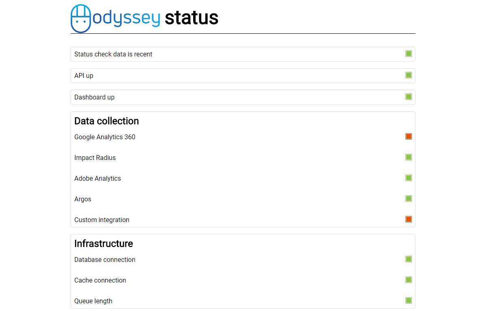

Statuspage 


 Live demo of Statuspage. This installation is a dedicated Lumen app monitoring a bigger Laravel app.
Installation
composer require code-orange/statuspageConfiguration
First, register the Statuspage ServiceProvider in your bootstrap/app.php:
$app->register(CodeOrange\Statuspage\StatuspageProvider::class);By default, Statuspage will register the status page at / and a JSON version of it on /json.
If you want to override this behaviour, you can set the STATUSPAGE_ROUTE environment variable.
If your route doesn't end in a slash, the JSON version will be hosted at /{$route}.json.
Statuspage comes with a default HTML page that displays the status of all registered checks.
If you'd like to make changes to this page, you should copy the view (from vendor/code-orange/statuspage/src/views/) to your own views folder.
You can then set the view you would like Statuspage to render with STATUSPAGE_VIEW.
For the header on the status page, Statuspage will normally use your APP_NAME or config('app.name') followed by the word 'status'.
If you want to use something different, you can set the STATUSPAGE_HEADER environment variable.
If this variable is set, the page header will be filled with its contents instead of the application name.
The environment variable can contain HTML.
All environment variables are optional.
#STATUSPAGE_ROUTE=/
#STATUSPAGE_VIEW=status
#STATUSPAGE_HEADER="<img src='https://odysseyattribution.co/logo.svg' style='height: 1.5em; vertical-align: middle;'> status"Usage
Registering checks
Statuspage works by registering StatusChecks (either alone or in sections) with Statuspage.
We recommend doing this in the boot method of your AppServiceProvider.
Statuspage exposes two relevant methods.
registerCheck($label, $check)allows you to register a single check with a label to the status page.registerSection($label, ['Label' => $check, 'Label 2' => $check2])allows you to register a section with a title and multiple checks to the status page.
For example:
class AppServiceProvider extends ServiceProvider {
public function boot(Statuspage $statuspage) {
$statuspage->registerCheck('Code Orange', new Http200Check('https://code-orange.nl'));
$statuspage->registerSection('Google', [
'Google 200' => new Http200Check('https://www.google.nl'),
'Google without www 200 (should fail)' => new Http200Check('https://google.nl'),
'Google without www 301' => new Http200Check('https://google.nl', 301)
]);
$statuspage->registerSection('Database', [
'Connection' => new DatabaseConnectionCheck(),
'Non-existing connection' => new DatabaseConnectionCheck('asdf')
]);
$statuspage->registerCheck('Dummy succesful', new DummyCheck(Status::$OPERATIONAL));
$statuspage->registerSection('Color check', [
'Operational' => new DummyCheck(Status::$OPERATIONAL),
'Maintenance' => new DummyCheck(Status::$MAINTENANCE),
'Degraded' => new DummyCheck(Status::$DEGRADED),
'Partial outage' => new DummyCheck(Status::$PARTIAL_OUTAGE),
'Major outage' => new DummyCheck(Status::$MAJOR_OUTAGE),
]);
}
}Writing your own checks
While Statuspage comes with a number of basic but useful checks, the real power is in the fact that you can easily define your own custom checks specific to your application.
To do this, simply start by subclassing CodeOrange\Statuspage\Checks\StatusCheck.
A check usually takes some arguments in its constructor and executes when its performCheck method is called.
A check always returns an instance of CodeOrange\Statuspage\Status, optionally with a message.
Background checking
By default, Statuspage executes all checks whenever the page is requested. While this is fine in a small-scale or development setting, it's probably not something you want in production.
To configure Statuspage to instead perform the registered checks in the background, add the following line to your Kernel's schedule function:
class Kernel extends ConsoleKernel {
protected function schedule(Schedule $schedule) {
app(Statuspage::class)->scheduleBackgroundExecution($schedule);
}
}The registered checks will be executed every minute (make sure php artisan schedule:run is properly configured in your crontab).
The results of your checks are stored in the default cache store (with key statuspage_status).
Known issues
- The framework doesn't (yet) deal with long-running checks. You are responsible for managing the run-time of your checks and setting timeouts.